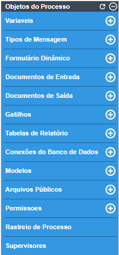

Para começar a usar o Gestor Express, é necessário se familiarizar com os elementos do Mapa de Modelo de Processos e da Modelagem para criar um projeto. Alguns dos principais elementos da modelagem de processos são descritos nesta página.
Observação: para evitar problemas de substituição, um recurso está disponível para proibir a abertura de várias instâncias de navegador do Gestor Express. Para obter mais informações, acesse: Arquivo de configuração env.ini: session_block.
Modelagem
No item Modelagem, há uma lista de projetos BPMN existentes e suas características.
Novos projetos podem ser criados e abertos para edição. A barra de ferramentas na parte superior oferece seis opções para trabalhar, incluindo opções para filtrar a lista de projetos por categoria e a opção de pesquisa.
As informações mostradas nas colunas desta página são as seguintes:
Título do Modelo de Processo: O título do projeto BPMN ou o modelo de processo clássico. Os títulos de modelos de processos estão limitados a um máximo de 100 caracteres. Títulos de modelos de processos antigos, com mais de 100 caracteres, são automaticamente reduzidos a esse limite quando são salvos.
Tipo: O tipo de modelo de processo é "bpmn", significando que o projeto BPM utiliza a notação BPMN 2.0, ou "classic" para modelos de processos importados, criados em versões anteriores.
Categoria: Categoria do modelo de processo. Para adicionar novas categorias, consulte Categorias de modelo de processo.
Status: O status do modelo de processo, que é "Ativo" ou "Inativo". Nenhum processo pode ser executado em modelos de processos com status "Inativo".
Usuários atribuídos: o usuário que criou o modelo de processo.
Data de criação: a data em que o modelo de processo foi criado.
Caixa de entrada: O número de casos do modelo de processo que estão atualmente pendentes e aparecem nas caixas de entrada do usuário para serem trabalhados. Esse número inclui casos na caixa de entrada e pastas não atribuídas. Esses casos ainda não foram abertos pelos usuários atribuídos no momento.
Rascunho: o número de casos em um modelo de processo com status Rascunho, o que significa que os usuários atribuídos no momento abriram esses casos, mas ainda não concluíram a tarefa atual.
Concluído: O número de casos concluídos no modelo de processo, o que significa que a tarefa final do modelo de processo foi alcançada e o caso não pode mais ser trabalhado.
Cancelado: O número de casos cancelados no modelo de processo. Veja casos cancelados.
Total de casos: o número total de casos que foram criados no modelo de processo (incluindo casos cancelados, mas não pausados).
Depuração: Ligado/Desligado. O Depurador pausa o caso quando os gatilhos são executados e exibe as variáveis do sistema e do caso, para que os modeladores de processo possam depurar seu código de gatilho e verificar como um modelo de processo está modificando as variáveis. Consulte Depuração de gatilhos.
Tipo de processo: O tipo do modelo de processo: público ou privado.
Data de atualização: a data em que o modelo de processo foi atualizado.
Menu de Modelagem
A barra de ferramentas acima da lista de modelos de projetos contém os seguintes ícones:
Para usar as opções Editar, Status, Excluir e Exportar, primeiro selecione um item da lista.
Criando um novo projeto
Para criar um novo projeto, clique no botão Novo do menu do designer conforme a imagem abaixo.
O Gestor Express só cria projetos com notação BPMN 2.0.
Após clicar em Novo, será aberta uma janela que deverá ser preenchida com um:
Título: Título do novo projeto. Observe que os Títulos de Modelos de Processo estão limitados a um máximo de 100 caracteres.
Aviso: é uma prática ruim adicionar colchetes angulares < > ao nome do título como << TestName >>. Isso faz com que o título do projeto do Mapa do Modelo de Processo seja exibido incorretamente, pois esse mapa é renderizado com HTML.
Descrição: Um breve resumo do processo criado.
Categoria: Categoria do processo. Este campo é preenchido com "Sem categoria" por padrão.
Assim que o novo projeto for criado, o Gestor Express redirecionará para o Mapa do Modelo de Processo dentro da guia Modelagem.
Editando um projeto
Para editar um projeto existente, clique duas vezes em um modelo de processos na lista ou selecione um projeto na lista e clique no botão Editar . Veja a imagem abaixo:
Se nenhum modelo de processo for selecionado e o botão Editar for clicado, a seguinte mensagem será exibida.
Uma vez dentro do item Modelagem, as informações do modelo de processo podem ser alteradas clicando com o botão direito do mouse em um espaço em branco do Mapa de Modelo de Processo e selecionando Editar Modelo de Processo.
Clique com o botão direito do mouse em qualquer elemento no modelo de processo para mostrar seu menu de contexto e ver mais opções. A seguinte janela será exibida:
UID O campo UID está disponível a partir do Gestor Express 3.2.2 em diante).
Título Campo obrigatório . Modifique o nome do projeto neste campo. Este campo aceita um limite de 100 caracteres, que podem consistir em letras, números, (_) sublinhados) e (-) hífens e caracteres como '$', '#', '&', etc.
Descrição Insira uma breve descrição sobre o projeto nesta área de texto.
Proprietário do Modelo de Processo Campo Obrigatório . Administrador por padrão. A configuração Proprietário do Modelo de Processo garante que um Modelo de Processo tenha um proprietário. Se você alterar o proprietário e excluir esse usuário, o Modelo de Processo atribuirá automaticamente o Administrador do Gestor Express. É recomendável ter a configuração do Proprietário do Modelo de Processo precisa para evitar a perda do Modelo de Processo quando um proprietário de Modelo de Processo privado for excluído.
Calendário selecione um calendário da lista, que indica as horas e os dias em que os usuários devem estar no trabalho. É possível criar seu próprio calendário dependendo dos dias e horas de trabalho. Se "Nenhum" for selecionado, o calendário padrão será usado.
Categoria do Modelo de Processo Selecione uma categoria da lista que identificará o projeto. É possível criar novas categorias .
Formulário Dinâmico para mostrar um resumo do caso Na lista, selecione o Formulário Dinâmico que aparecerá no Resumo do caso . A partir do Gestor Express 3.3.4 , este Formulário Dinâmico também aparece ao abrir casos não atribuídos . Se "Nenhum" for selecionado, o resumo exibirá informações genéricas, como quem está atribuído ao caso e quando ele foi criado, mas não exibirá nenhum dado do caso.
Modelo de tela de roteamento os designers de Modelo de Processo podem personalizar o modelo de tela que é mostrado ao usuário quando é concluído e roteia para a próxima tarefa no Modelo de Processo. Cada tarefa pode ter seu próprio modelo de tela de roteamento.
Depurador Ao projetar um Modelo de Processo, é uma boa ideia ativar a opção Debug, que mostra quando os gatilhos são acionados e quaisquer erros que possam ter ocorrido. No modo de produção normal, o relatório de erros é suprimido, por isso muitas vezes é difícil saber se o código do gatilho foi executado corretamente ou não. Mais importante, a opção Debug permite que o usuário examine os valores nas variáveis que são passadas aos gatilhos. Por motivos de segurança, certifique-se de desativar o modo de depuração quando seu Modelo de Processo for usado em produção.
Ocultar o número do caso e o título do caso nas etapas Esta opção permite que o número e o título do caso sejam ocultados do usuário durante a execução de um caso. Ocultar o número do caso pode ser útil se os usuários não souberem quantos casos já foram executados.
Este é um subModelo de Processo Selecionar esta opção designa o projeto como um subModelo de Processo de um Modelo de Processo pai e remove o projeto da lista quando os usuários clicam em "Novo caso" no menu inicial, para que os usuários não possam iniciar casos com esse Modelo de Processo.
Executar um gatilho quando um caso for criado selecione um gatilho a ser acionado quando um caso for criado . Por exemplo, um gatilho pode pesquisar na tabela APPLICATION o último caso criado pelo mesmo usuário no mesmo Modelo de Processo e copiar seus dados para o novo caso.
Executar um gatilho quando um caso for excluído selecione um gatilho a ser acionado quando um caso for excluído . Por exemplo, um gatilho pode enviar uma notificação ao supervisor de um usuário quando o usuário exclui um caso.
Executar um gatilho quando um caso for cancelado selecione um gatilho a ser acionado quando um caso for cancelado . Por exemplo, um gatilho pode remover dados de um banco de dados externo quando um caso é cancelado.
Executar um gatilho quando um caso for pausado selecione um gatilho a ser acionado quando um caso for pausado . Por exemplo, uma notificação pode ser enviada aos membros de um departamento quando um usuário pausa um caso.
Executar um gatilho quando um caso for retomado selecione um gatilho a ser acionado quando um caso for retomado . Por exemplo, uma notificação pode ser enviada aos membros de um departamento quando um usuário retoma um caso.
Executar um gatilho quando um caso for reatribuído selecione um gatilho a ser acionado quando um caso for reatribuído . Por exemplo, um gatilho pode iniciar um caso em um Modelo de Processo quando um usuário reatribui um caso.
Executar um gatilho quando um caso for aberto selecione um gatilho a ser acionado quando um caso for aberto . Por exemplo, um gatilho pode atribuir valores a variáveis que são usadas em condições para abrir formulários dinâmicos ou executar outros gatilhos na primeira etapa da tarefa.
Acesso ao Design do Modelo de Processo Público/Privado (Proprietário)
Custo Este campo está relacionado aos KPI's , e é onde os gestores devem configurar o custo aproximado dos tempos ociosos na execução do custo do Modelo de Processo. Por exemplo, se um caso do Modelo de Processo tiver o status "Não atribuído", não é possível cobrar de nenhum usuário pelo tempo ocioso. Nesse caso, a "ineficiência" é calculada usando o valor definido neste campo.
Unidades Defina a unidade atual do campo Custo neste campo.
Salvar Esta opção salva as propriedades do projeto. Quando a configuração for salva, uma mensagem flash será exibida indicando que as propriedades do Modelo de Processo foram salvas com sucesso.
Cancelar Esta opção descarta quaisquer alterações feitas nas propriedades do projeto.
Mostrando o status do projeto
Esta opção mostra o status do projeto: Ativo ou Inativo. Os casos não podem ser executados em projetos com status Inativo.
Quando um projeto com status Ativo é selecionado, o botão Desativar aparecerá na barra de ferramentas. Enquanto isso, projetos com status Inativo terão o botão Ativar na barra de ferramentas.
Desativar : Para alterar o status de um projeto para Inativo para que nenhum caso desse projeto possa ser executado, primeiro selecione o projeto na lista e depois clique no botão Desativar.
Ativo : Para alterar o status de um projeto para Ativo para que os casos de um modelo de processo possam ser executados, primeiro selecione o projeto na lista e depois clique no botão Ativar.
Excluindo um projeto
Clique nesta opção para excluir um projeto. Um projeto só pode ser excluído se não houver casos ativos do projeto. Se houver casos ativos, conclua, exclua ou cancele os casos antes de tentar excluir o projeto. Caso o projeto não possua casos ativos, uma caixa de diálogo é exibida solicitando ao usuário que confirme a exclusão:
Selecione "Sim" para excluir o projeto ou clique em "Não" para fechar a mensagem sem excluir o caso.
Se o projeto tiver algum caso ativo, uma mensagem de erro aparecerá impedindo que o projeto seja excluído.
Nota: A exclusão de um projeto não removerá seus casos do banco de dados.
Exportando um projeto
Esta opção permite que os administradores exportem o projeto diretamente do menu modelagem. O projeto será salvo em um arquivo com a extensão .pmx. Para obter mais informações, consulte a documentação completa sobre Importação e exportação de projetos.
Ao exportar um projeto, não exportará a atribuição de usuários e/ou grupos às tarefas do projeto. Também não exporta nenhum caso do projeto. Para exportar atribuições e casos de usuário, juntamente com a definição do projeto, consulte Fazendo backup de áreas de trabalho.
Importando um projeto
Para importar um projeto, clique no botão Importar e selecione o arquivo de projeto a ser carregado do servidor para que possa ser importado para o Gestor Express.
Observe que apenas a definição do modelo de processo (projeto) é importada, mas as atribuições e casos do usuário não são importados. Para mais informações consulte a documentação completa sobre Importação e Exportação de Projetos.
Excluindo todos os casos de um processo
Para excluir todos os casos de um modelo de processo específico, clique no botão Excluir casos após selecionar um modelo de processo da lista. Esta opção está disponível apenas se o usuário tiver a permissão DELETE_PROCESS_CASES atribuída.
Após clicar na opção Excluir Casos, uma janela de mensagem é aberta para confirmar quantos casos do processo selecionado serão excluídos.
Clique em 'Sim' para confirmar a exclusão de todos os casos e a mensagem a seguir mostrará o progresso. Somente os casos pertencentes ao modelo de processo selecionado serão removidos das pastas Caixa de entrada, Rascunho, Pausado, Não atribuído e Participado.
O Mapa do Processo
O Mapa do Processo no Gestor Express possui uma interface gráfica de arrastar e soltar, que permite que os elementos sejam facilmente adicionados, excluídos e reorganizados.
As principais características da modelagem incluem:
A capacidade de selecionar vários elementos ao mesmo tempo no Mapa do Processo e movê-los como um grupo sem alterar a estrutura do processo.
As anotações podem ser conectadas a uma tarefa.
Os processos são salvos automaticamente a cada 15 segundos. Ao ativar a alternância Auto Save, os processos são salvos automaticamente a cada 40 segundos.
As regras de roteamento são operacionalizadas por Gateways BPMN.
Elementos, como tarefas e gateways, são delimitados com pontos amarelos, que podem ser arrastados e soltos em outros elementos para criar conexões.
Os elementos no modelador podem ser movidos usando as teclas left, right, down e up no teclado.
Uma caixa de ferramentas fornece acesso direto a elementos de design como: formulários dinâmicos, documentos de saída, documentos de entrada, gatilhos e conexões de banco de dados.
Para criar um modelo de processo, é necessário reconhecer os elementos que compõem o Mapa do Processo:
Nota: Não é recomendado trabalhar no desenho do mesmo processo usando diferentes abas ou janelas do navegador. O Gestor Express não funciona adequadamente em tais circunstâncias.
Barra de ferramentas rápida
Os designers têm a capacidade de concluir facilmente a próxima etapa da modelagem usando a opção Barra de ferramentas rápida. Esta opção mostra os próximos elementos disponíveis para adicionar ao Mapa do Processo.
Para uma tarefa, os próximos elementos disponíveis podem ser outra tarefa, um evento intermediário, um evento final, um gateway ou um fluxo para outro elemento. Se o elemento puder ser configurado, a opção de configuração também aparecerá na Barra de Ferramentas Rápida do elemento, junto com a opção Excluir.
Para um gateway, os próximos elementos disponíveis podem ser outro gateway, uma tarefa, um evento final ou um fluxo para outro elemento. As opções de configuração e exclusão também estão disponíveis.
Ao criar um novo projeto, já existe um evento de início adicionado no Mapa do Processo. Ao clicar no elemento, os próximos elementos disponíveis para o evento inicial serão mostrados. Simplesmente clicando no próximo elemento, o elemento será adicionado ao Mapa do Processo. O fluxo entre os elementos também é adicionado ao usar esta opção.
Na figura acima, após a adição da tarefa "Solicitar licença", os próximos elementos (a tarefa "Aprovar solicitação de licença", o gateway exclusivo "Aprovado?" e o elemento final "Enviar confirmação") também são adicionados usando a Barra de ferramentas rápida de cada elemento.
Aviso: A barra de ferramentas rápida de um evento de início mostra um gateway, mas o fluxo do processo não pode iniciar com um gateway, o gateway será adicionado à tela de modelagem, mas não será conectado ao evento de início.
Validação de Conexão de Elemento
Ao conectar dois elementos no mapa de modelo de processos, o próximo elemento disponível é verde. Enquanto isso, as conexões inválidas entre os elementos ficarão vermelhas.
Por exemplo, ao conectar um evento de início e uma tarefa já adicionada ao mapa de modelo de processos, o conector entre a tarefa e o evento de início ficará verde para representar sua disponibilidade para conexão:
Ao fazer uma conexão inválida, como entre um evento inicial e um evento final, o elemento ficará vermelho, indicando que é impossível conectar os dois elementos.
Caixas de ferramentas e ferramentas de modelagem
O título do projeto e as principais opções estão localizados na barra de ferramentas superior. Os elementos BPMN 2.0 usados para projetar modelos de processos estão localizados logo abaixo da barra de ferramentas superior. A caixa de ferramentas principal, que contém as opções para gerenciar o modelo de processo, criar variáveis e formulários, está localizada inicialmente no lado direito do Mapa de Modelo do Processo. No entanto, é um menu flutuante que pode ser minimizado ou colocado em outro local do Mapa do Modelo de Processo.
As principais caixas de ferramentas e ferramentas de modelagem de modelos de processos são:
A barra de ferramentas superior
Caixa de ferramentas de formas
Alternar Salvar Automático
Caixa de ferramentas principal
Menu de contexto do modelo do processo
Menu de Contexto de Elementos
A barra de ferramentas superior
A barra de ferramentas superior exibe o título do projeto e mostra as seguintes opções para modificar o comportamento do Mapa de Modelo do Processo:
Aviso: Na modelagem de processo, quando um elemento do mapa de modelo do processo é excluído e as alterações são salvas, a ação Desfazer/Refazer NÃO recupera a configuração do elemento do mapa de modelo do processo (por exemplo, regras de atribuição e etapas de uma tarefa). A ação Desfazer/Refazer apenas recupera o ícone do elemento do mapa de modelo do processo sem nenhuma configuração pré-definida.
Na barra de ferramentas superior, a opção Zoom permite ao usuário ajustar o tamanho do texto e das imagens no Mapa de Modelo do Processo. Para ver como funciona, dê uma olhada na próxima imagem:
Confira a diferença entre os tamanhos 75% e 150%:
75% em tamanho
150% em tamanho
A barra de ferramentas também tem duas opções para exportar o diagrama e o modelo de processo. A descrição de ambas as opções estão na próxima imagem:
Aviso: Diagramas que incluem objetos de dados (controles de entrada e/ou saída de dados) podem ser corrompidos quando o usuário usa a opção Exportar diagrama.
As opções Salvar e Salvar como também podem ser encontradas na barra de ferramentas superior. Quando qualquer um desses botões for clicado, uma mensagem rápida aparecerá na parte superior do modelador indicando que o modelo de processo foi salvo com sucesso. Se ocorreu um erro ou a sessão foi perdida ao salvar o modelo de processo, uma mensagem de erro aparecerá na parte superior da tela de modelagem.
Clique em Cancelar para descartar todas as alterações. Após clicar em Salvar, o novo modelo de processo estará disponível para ser editado. Ele também será listado entre os demais projetos com o novo título dado.
Caixa de ferramentas de formas
A caixa de ferramentas de formas está localizada abaixo da caixa de ferramentas superior na parte superior da tela de modelagem. Esta caixa de ferramentas inclui elementos de design BPM como: Tarefas, Subprocessos, Gateways, Eventos, Artefatos, entre outros.
Os elementos incluídos nesta caixa de ferramentas estão descritos na imagem abaixo:
Tarefa
Subprocesso
Gateways: inclui os seguintes tipos de gateway: exclusivo, paralelo, inclusivo.
Eventos: Inclui os seguintes tipos de eventos: um evento de início vazio, um evento de início de temporizador, um evento de temporizador intermediário, um evento de mensagem intermediária, um evento de término vazio e um evento de mensagem de término.
Elementos de dados: Inclui: objeto de dados e armazenamento de dados.
Piscinas e raias: Inclui: piscina caixa preta, piscinas e raias.
Artefatos: Inclui: grupo e anotações.
Laço: Permite a seleção de vários elementos no desenho para movê-los como um bloco usando as teclas do cursor. Observe que esse controle não funciona com elementos que estão dentro de uma piscina ou raia.
Elementos agarrados pelo laço não podem ser apagados todos de uma vez ao pressionar a tecla DEL.
Observe que, se por algum motivo a janela de modelagem' do processo for fechada enquanto os elementos são movidos com a ferramenta laço, as alterações não serão salvas.
Caixa de ferramentas principal
Esta caixa de ferramentas contém as opções para gerenciar o modelo de processo, criar variáveis, Formulários Dinâmicos, Documentos de Entrada e Saída, Tabelas de Relatórios, conexões de banco de dados, templates, arquivos públicos, tipos de mensagens, gatilhos, permissões, rastreio de processos e supervisores:
Uma das principais características desta caixa de ferramentas é a capacidade de movê-la para qualquer lugar no Mapa de Processo.
Esta caixa de ferramentas inclui os seguintes elementos de design de processo:

Variáveis: Crie variáveis de caso para serem usadas em Formulários Dinâmicos, gatilhos e outros objetos onde forem necessários.
Tipos de Mensagem: Crie Tipos de Mensagem para serem enviados junto com Eventos de Mensagem.
Formulários Dinâmicos: Crie formulários personalizados que podem ser projetados no Gestor Express para interagir com o usuário durante a execução de um caso.
Documentos de entrada: Crie documentos de entrada para carregar qualquer arquivo durante a execução de um processo.
Documentos de Saída: Crie um documento de saída para gerar documentos PDF ou DOC durante a execução de um processo.
Gatilhos: Insira o código PHP em um processo.
Tabelas de relatórios: exporte dados de um caso para que possam ser acessados facilmente por aplicativos externos e consultas SQL padrão.
Conexões de banco de dados: Conecte o Gestor Express com outros bancos de dados externos.
Modelos: Modelos são arquivos .html usados como modelos de e-mail para envio de notificações.
Arquivos Públicos: Armazena arquivos que serão utilizados em um processo, como documentos comuns da organização, arquivos gráficos, etc.
Permissões: Gerencie as permissões do projeto por usuário ou grupo no Gestor Express
Rastreio de Processos: Gera um PIN que permite que um usuário externo faça login no Gestor Express e analise os avanços de um determinado caso.
Supervisores: Os supervisores de processo são usuários que possuem privilégios especiais para supervisionar e revisar os casos de um projeto específico.
Menu de contexto do processo
Editar Processo: Esta opção permite modificar o nome do processo e sua descrição. Ele também fornece opções para habilitar o modo de depuração e definir um calendário para o processo.
Habilitar linhas de grade: Por padrão, um modelo de processo é criado sem nenhuma linha de grade; escolha esta opção para habilitá-las. A grade permanecerá, após habilitada, em todos os modelos de processos até que seja desabilitada.
Menu de Contexto de Elementos
Ao clicar com o botão direito do mouse em um elemento adicionado no mapa do processo, como uma tarefa, um evento, o próprio mapa do processo, etc., um menu é exibido.
Menu de Contexto da Tarefa
Para editar uma tarefa, clique com o botão direito em uma tarefa para exibir o seguinte menu contextual.
Tipos de tarefa: selecione o tipo de tarefa para modelar processos que são tecnicamente executáveis.
Observação: NÃO altere o tipo de tarefa enquanto houver casos em execução ou atribuídos a essa tarefa. Se o tipo de tarefa for alterado, os casos podem se tornar inacessíveis. No entanto, é possível alterar o tipo de tarefa mesmo quando há casos em execução, desde que não haja nenhum caso nessa tarefa específica.
Tipo de Marcador: Selecione o tipo de marcador da tarefa.
Etapas: No Gestor Express, uma etapa é uma parte do trabalho que forma uma ação claramente definida dentro de uma tarefa. Selecione esta opção para adicionar uma etapa à tarefa. Consulte a seção Etapas.
Regras de atribuição: Selecione esta opção para atribuir a tarefa a usuários, grupos ou usuários ad hoc que terão permissão para acessar e concluir a tarefa. Consulte a seção Regras de atribuição.
Observação: NÃO altere a regra de atribuição de uma tarefa enquanto houver casos em execução ou atribuídos a essa tarefa. Se o tipo da tarefa for alterado, os casos poderão se tornar inacessíveis.
Editar rótulo: Edite o rótulo da tarefa.
Nota: Leve em consideração que o nome da tarefa não deve ser alterado quando houver casos em execução ou atribuídos à tarefa. Ao alterar o nome da tarefa, leve em consideração que os casos atribuídos à tarefa não serão atualizados nas listas de casos de usuários que estão trabalhando no caso.
Excluir: Selecione esta opção para excluir a tarefa.
Observação: NÃO exclua uma tarefa enquanto houver casos em execução ou atribuídos a essa tarefa. Esta ção causa erros e os casos tornam-se inacessíveis. Em vez disso, para excluir uma tarefa no modelo de processo, certifique-se de que nenhum caso esteja em execução ou atribuído à tarefa.
Propriedades: Selecione esta opção para definir como uma tarefa deve ser tratada. Por exemplo, atribuição de tarefa, limites de tempo, notificações por email, se é uma tarefa inicial, atribuição ad hoc e a definição de rótulos de caso são exemplos do que pode ser configurado nas propriedades. Veja a seção Propriedades.
Menu de contexto do gateway
Os gateways têm opções diferentes em seus menus contextuais. Clique com o botão direito do mouse sobre o gateway para ver seu menu contextual:
Tipo de Gateway: Selecione o tipo de gateway: Exclusivo, Inclusivo ou Paralelo.
Editar Rótulo: Edite o rótulo do gateway.
Excluir: Exclua o gateway selecionado.
Fluxo padrão: defina um fluxo padrão quando nenhuma das condições for atendida.
Propriedades: Edite a regra de roteamento do gateway. Os gateways inclusivos e exclusivos têm propriedades que podem ser editadas, mas os gateways paralelos não.
Consulte a documentação do Gateway para entender como usá-los.
Menu de contexto do evento
As opções do menu para eventos são diferentes dependendo do tipo de evento. Clique com o botão direito do mouse no evento para exibir o menu de contexto do evento e selecione uma opção.
Tipo de Evento: Selecione o tipo de evento Iniciar, Intermediário ou Final.
Editar Rótulo: Edite o rótulo do evento selecionado.
Excluir: Excluir o evento selecionado.
Para obter mais informações sobre as outras opções, consulte a documentação de eventos .